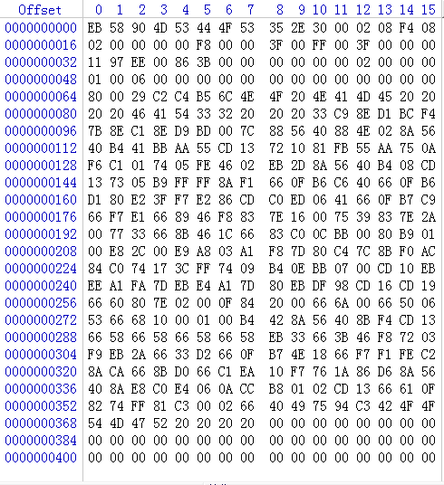

FAT notes
更新日期:
项目中总是在用FAT文件系统，移植fatfs也相当简单，所以没有真正的去研究过FAT的实现过程。以前也看过相关文档，但是当时很难明白其中的意思，现在再看，居然一下就通了，也需是因为用的多了的缘故吧。
什么是FAT
FAT 全名 File Allocation Table ，文件定位表。顾名思义，就是一个表。我们读写文件的过程，也就是一个查表的过程。
存储介质
先有存储介质，后有文件系统的(不限于FAT)。存储介质，比如硬盘，flash。是可以直接读写的。我们可以直接往flash写数据，也可以读出来。比如我往地址0x200000的地方写入1000个0xAA，那么我也可以在0x200000读出来1000个0xAA。如果一个存储介质只写这一段数据，那不要任何文件系统都是可以的。但是一个几十G的Flash肯定不可能只写这1000个数据的。问题就来了，当我写了很多数据之后，我怎么记住我的数据放在哪？有多长？另外flash中哪些地方是写了数据的，哪些地方是没写数据的？我要找到之前放的数据，怎么找？所以，文件系统就很必要了。有了它就可以清晰的管理存储介质的使用，方便的管理数据的存储。
第0扇区
之前说文件系统是一个表，那么这个表存储在哪里？是的，在扇区0，这个扇区叫MBR(Master Boot Recoder)，这个表叫BPB(BIOS parameterBlocks)。我们看看Fatfs对这一部分的定义：
这里fatfs用的宏，而不是结构体，为的是平台兼容性。这个表记录了存储介质和FAT的很多信息，有了这些信息，就可以查询到这个存储介质到底存储了什么，还有哪些地方可以放数据等等。
winhex打开一个U盘，它的扇区0数据如下：

通过查表，我们就知道这个U盘的扇区大小为0x200 = 512。保留区域的大小 = 0x08F4。我们的表的大小只有512字节，剩下的保留区域存储了一些引导信息，以及这个表的备份信息。
FAT扇区
过了保留区域，就是FAT扇区了。FAT扇区就是描述文件在存储介质中位置的一个表。FAT扇区一般有两个，FAT1和FAT2，FAT2是FAT1的备份，这个表的规则如下：
- FAT32用32bit表示簇的地址，即4个字节是最小的寻址单位。
- 0号地址和1号地址为系统标志，从2号地址开始对应数据区簇。
- 2号地址为根目录的簇。
- 如果簇里面放了文件，那么对应的FAT地址会放该文件占用的下一个簇的FAT地址，形成一个链表结构。
- 如果文件没有继续占用下一个簇，那么FAT对应地址表项填充结束标志 FF FF FF 0F。
- 如果该簇没有被占用，对应的FAT地址填充0.所以格式化一个U盘后，FAT扇区除了0号和1号其他扇区都会被置0。
按照上面的规则，我们就能查表得到一个完整的数据链。
根目录
过了FAT扇区，就是数据区了，数据区第一个是根目录，根目录记录了文件的各个信息。要点如下：
- 数据区以簇为单位
- 根目录在第二簇
- 根目录记录了根文件夹和文件的信息，以32个字节表示
- 目录项记录了文件的各个信息，比如文件名，大小，创建日期等
- 当使用长文件名时，FAT会建立一个长文件名目录项
- 目录项会记录当前目录占用的簇号和父目录项占用的簇号
读取文件流程
假设文件名称为test.txt，放在 File文件夹下面
- 通过扇区0(引导扇区)定位FAT，和根目录位置
- 在根目录下面查找名称为File的目录项
- 在File目录项中获取其簇号，假设为n
- 到n号簇查找名称为test.txt的目录项，获取其簇号为m
- 取出m簇中的内容
- 定位到FAT中的m号地址，判断簇链是否已经结束，若是没有结束，继续到下一个簇提取数据。知道FAT中遇到结束标志位置